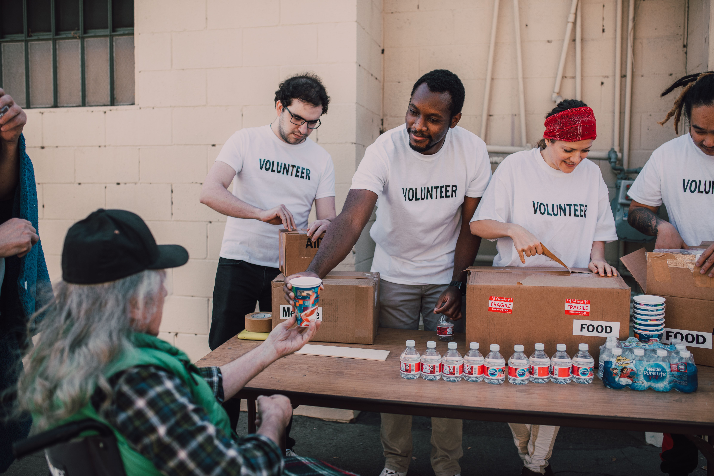
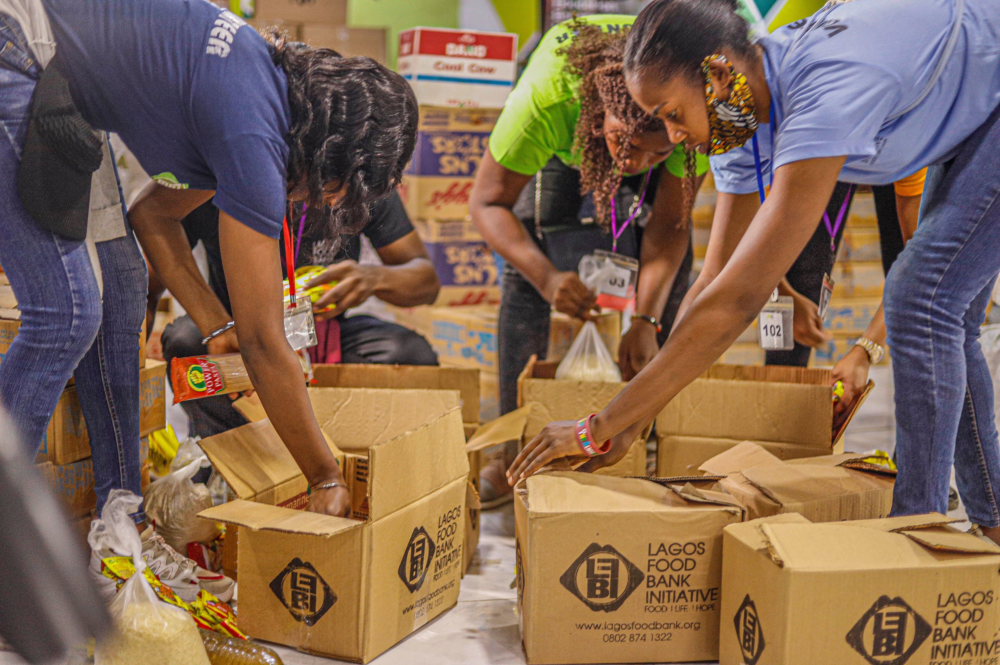
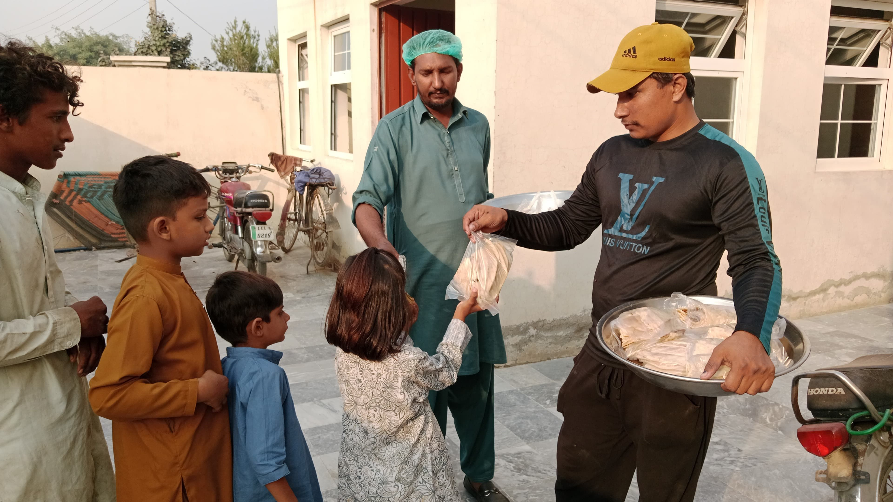
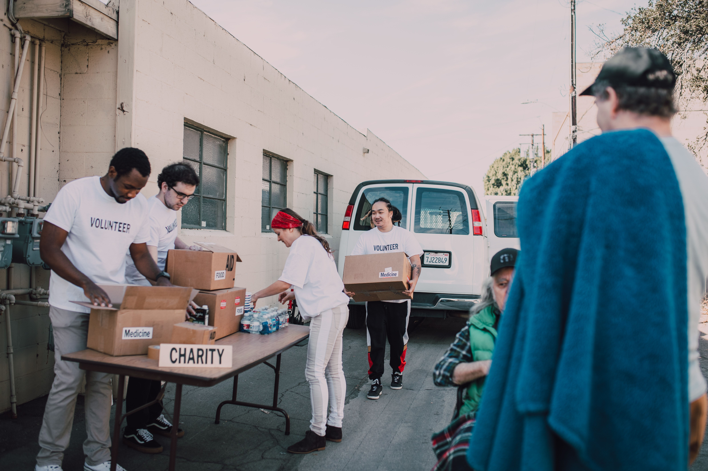

Food Rescue Network connects restaurants, hotels and NGOs to ensure surplus food reaches people who need it instead of ending up as waste.
Donate Food Become a Volunteer
Millions of meals are wasted every day while many families struggle with hunger. Food Rescue Network aims to bridge this gap by connecting food donors with NGOs and volunteers, making sure good food reaches the right people.

Restaurants list surplus food available for donation.
Nearby NGOs receive instant updates about available food.
Volunteers collect the food safely and quickly.
Fresh meals are distributed to shelters and families.

Meals Served
Volunteers
Partner Restaurants
Cities Reached

Your small effort can make a huge difference. Help collect and distribute food to those who need it most.
Join Now"Volunteering with Food Rescue Network has been an amazing experience. Every meal matters."
"This initiative has helped our shelter receive fresh meals regularly."
Email : support@foodrescue.org
Phone : +91 98765 43210
Address : Hyderabad, Telangana, India